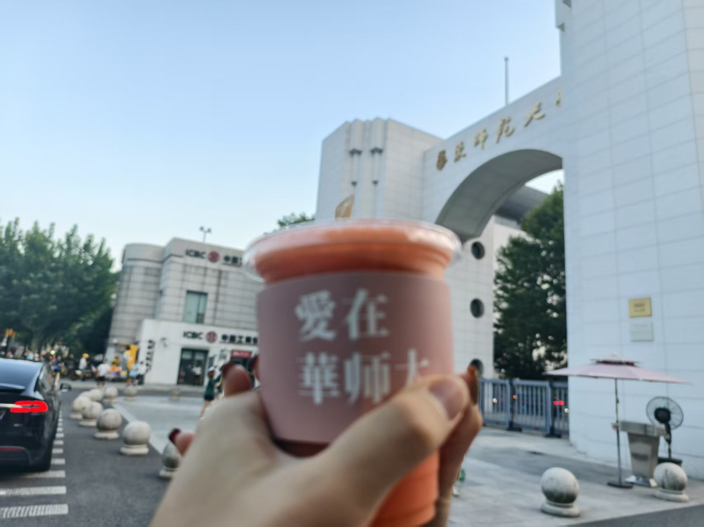
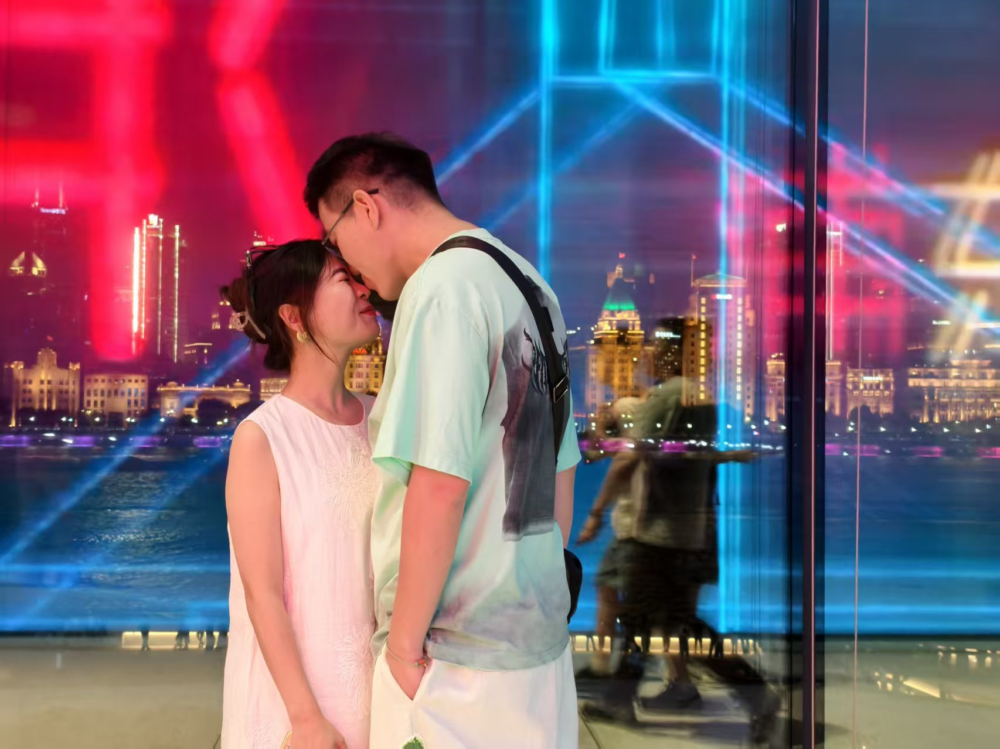

我们的瞬间


📷 把更多照片放入文件夹，命名为 photo_3.jpg、photo_4.jpg……即可出现
胡昊 & 高嘉阳 · 一周年
我现在还记得第一次见你的每个细节，你从舅舅的身侧出现，舅舅开心的搂着你和我讲："你看她也来了"。她是谁？我应该认识吗？为什么也喊舅舅，哪里跳出来的？
我尴尬和你打招呼，你热情的回应了我，好像我们本来认识一样。灯光照在你脸上，像主角登场。我是一个只有一句台词的小角色，蜷缩在你的明媚下，用疲惫把我包裹了起来，小心翼翼的隐藏我的尴尬。
早就不记得这间寺庙的名字，不是翻手机也记不得拍了这些漂亮的花花草草。只记得这个塔有点斜，这个铃铛和你。
手机里第一张你的照片，比后面我们特意拍的喜欢。

不确定是哪一刻，放下了疲惫的包裹，有了想亲近你的感觉。是姐姐借给我的肩膀吗？是你扎针时流露出的疲倦吗？第一次看见了窗户里的你，没有高傲的红唇，清澈明朗，透着疲惫和动人的美，是出水的芙蓉。
亲爱的，你刚刚问我真的有一见钟情吗？我一直在想。
我的答案是：是的，我对你确乎是一见钟情。当我看见你的喜怒哀乐，看见你的疲惫憔悴，看见墙里的真实的你，就无法自拔的爱上你了。
无数次回忆那天与你相处的每一个细节，企图确认动心的那一瞬间。佛国寺与你独处的欣喜，你的笑影迟迟无法散去。想开口留你在副驾导航的内心独白与那辆车走散的失落。壁画博物馆的北齐风流和你的衣袂。
高嘉阳，我对你一见钟情。
风吹过你的发，雁门关回荡千年的英雄气也慑服于你的笑容。杯中黄酒倒映你的笑容，唇齿留香在我的心。
我们本该相爱。
旅途的最后一天，终于又坐在你的身侧，闻见你的味道，行在你的背后，亦步亦趋。三千年的磅礴也挡不住你的回眸一笑。
看你的眼睛，倾听你的故事，跟着你的脚步，用镜头留下我们的瞬间，用最纯粹的欣喜触碰，感受。
我们今日就要分别，天高海阔，江湖路远，重逢何有期。如兰亭群贤"夫人之相与…欣于所欲，暂得于己，快然自足"，当效陶子归去来兮，自问"胡不归？"但我真的有陶子的智慧与潇洒吗？
可以抱你一下吗？
……
抱你一辈子。
26岁，在南京看到了最美的落日，见到了最想见的人儿。
她比记忆中的还要可爱，会偷偷藏在机场，期待我去发现，算盘落空后会奔向我呼唤我。比我记忆中的还要美丽，眼睛像大海的漩涡，让我一刻都舍不得挪开，一刻都舍不得松开牵她的手。
和记忆中一样潇洒有范，灯光下，光栅内，微笑，摇曳，盘头，捻足，每一个动作都恰到好处，是superstar，是我的缪斯。
她也会生很凶的气，会用酒精麻痹自己，酒后她会撒娇，会呆呆的看着窗外，让我心碎，第一次如此手足无措。我好爱她，看她难过我会落泪，看她开心我会快乐。看她幸福的样子，幸福她的幸福。
七夕的钟声响起，收到在每一个晚安之后悄悄准备、让我落泪的信和爱的卡片。
26岁，在南京，最美的落日和最爱的你。

Hi我的小鸡毛，不知道你睡的是否踏实，梦是否香甜。显然，是我，此时还清醒。想念，让我无法入睡。
兜兜转转，今天是我们在一起的第226天，我们认识的第233天。7个月的时间好像并没有磨平我们的爱意，反而让我在深夜因为喷涌而来的思念哭到无法入睡。
35岁的年纪，我才没有想过我会因为一个男孩子哭到失眠。35岁的年纪，我才不会承认因为思念一遍遍泪流满面。
这233天时间，是你勇敢又主动地让我直面自己内心；也是你比我更懂我自己，在我跟自己闹脾气的时候一点点撬开外面的刺，一点点安慰着那颗自以为保护的很好，实际早就被自己弄伤的心；还是你，让我好像开始没那么害怕婚姻，开始向往两个人的生活，开始无法适应没有你的日子…
我比我以为的，还要爱你。
我比我察觉到的，还要爱你。
亲爱的，选择你，是我人生中最坚定的一件事。你问我为何，我沉默不语，苍白的语言和知识的贫瘠无法表达其万一，用命运做解。
心理学讲薄片撷取效应：人类大脑能在极短时间内通过碎片信息形成对他人性格、可信度的准确判断。短暂的相处已经激活我迟钝的大脑，你的思想，你的真诚，你的疲惫，你的笑容，你的倾听，你的情绪，一切的一切与我内心深处那个模糊的、我不曾察觉过的身影逐渐重合，具像了我对爱情的抽象想象。
和你讲话是如此自由，我第一次感到做真实的自己是被全然接纳的，不用表演，不必隐藏。你恰好出现在我需要的灵魂坐标，和你一起，我有足够的欲望和创造力。
我可以确定的是，我的基因选择了你，从多巴胺到荷尔蒙；我的灵感选择了你，从文字到表达；我的动物性选择了你，从本能到欲望；我的神性选择了你，你是我追求的真善美，是我的超越。
以上所有汇成我的坚定：我爱你。
这份坚定不是终点，是我决心向你靠近，自我超越的起点。
再一次坐在教室
坐在你身边
食堂吃饭
小径漫步
少年一样
买一杯
爱的胡萝卜汁
窥你的眉
描你的脸
课桌下牵你的手
墙角的吻
电子纸条
昨夜你的温柔
回忆从前
想着未来
写给你的每一句情话
和月亮一道
浮起
淡淡秋心
是离别吗
时光太短
相聚总是不够
时光很久
我们约好
天长地久
有一天
我会驾着七彩祥云
为你披上万丈霞光
生生世世
第二天了，还是睡不着。离了你，就像今晚云遮了月，从点点滴滴听到叶叶声声，还是无法睡去。
相爱以来，只觉光阴寸短，看你不够，听你不够，想你不够，睡眠也不够。不曾想竟连日辗转难眠。这种失眠不是梦里听到你的呼唤骤然醒来；不是在你身侧默默流泪到天明；不是感应于你，百转千回。
是无法入睡，好像少了什么——像挠不到的背。是在身边的拥抱，半夜醒来的吻，梦中也要贴贴；是在电话那头的娇嗔，夜半时分，努力去听你的呼吸。
我好想你，日出日落，黄昏三更。
困了，看见你的消息，知道你也睡不着，知道你现在睡去了。我也该睡了，晚安。
原来还是我们的感应。
喜欢到爱要走多远呢？魂牵梦绕算不算爱呢？是早起发现被你拉黑之后痛彻心扉吗？是第一次争吵之后的魂不附体吗？
我很难过，因为你不开心，我尝试解决但搞砸了。我不懂感情，不懂女人，不懂什么时候该讲什么话。我也不是傻子，也会讨别人开心，但总让你落泪，我的心都碎了。
我太笨拙，不擅长情绪提供，在你需要倾听的时候打扰你，我很抱歉。我没有站在道德里，我只想站在你背后。如果我没有做到，原谅我，我会做到的，一辈子。我要倾听你的喜怒哀乐，和你一起消化所有情绪，这是我给你的承诺。
你问我是什么时候爱上你，我想了很多个瞬间。
8月11号那天早上，痛哭流涕，一遍又一遍给你写信。后来你反复给我道歉，宿醉的周一，也要时时找我，怕我不开心。也是那天第一次说爱你。
是在西安，我反复求导，明悟我的心。那天晚上痛的刻骨铭心。
是在南京，我们的七夕，我们的热情。
是上海，你哭的上气不接下气，我心都碎了。
是向我的爷爷奶奶介绍你，踯躅已久，下定决心告诉我的父母长辈。
太多太多，我不确定是哪一个瞬间。但我确定，日复一日，爱在生长。
我爱你，我愿意改变。我要做到我的承诺，不要剥夺我的权利。
我的Jasmine，
100次落日，100个爱你的夜。
你是
第一朵茉莉
绽放在我的撒哈拉
这一次
比小王子幸运
找到了
第一朵
玫瑰
绽放在我的星空
从别后，忆相逢，几回魂梦与君同。
📷 把更多照片放入文件夹，命名为 photo_3.jpg、photo_4.jpg……即可出现
遇见你之前
我不会写喜欢
我不知道
也没人纠正
谁又在乎呢
这世界那么大
我也不在乎
遇见你之前
我不会写喜欢
简单的欲望
简单的开心
简单的孤独着
看着别人的幸福
远远的祝福
遇见你之前
我不会写喜欢
从小得不到
最想要那个
长大
也就远远看着
别人放光芒
克制我的欲望
告诉我自己
这是成熟
遇见你之前
我不会写喜欢
也不懂爱
不懂为什么
一个人会
傻傻
看另一个人
遇见你的那天
也没有什么特别
普通的风
普通的夜色
一个发光的你罢了
那天
你说我
写错你的嘉
写错喜欢你
这么多年
第一次知道
第一次有人告诉我
遇见你之后
不再克制
不用成熟
告诉我自己
这一次
我要把握
最想要的
爱你走过的路
走过那些时光
走进我的岁月
遇见你之前
我不会写喜欢
幸好
遇见你
我应不应该相信命运呢？
雷古神山，我爬到泽当错，到了这里才知道泽当两个字是爱情的意思。这里云雾昭昭，像仙气一般，但是我看不清这个湖的真面目。给你打完电话之后，云雾慢慢散去。但没有阳光的照射，没有五颜六色的湖面，也不过是很普通的冰晶。
若我信命信缘，它是要告诉我，迷雾散尽会看到湖面吗？半散不散的时候湖面才最美。是你的到来？是我们的到来？在马年第一个到达泽当错的人，是我们的到来，让湖面的雾被驱散了？还是和你结束通话之后，雾才被驱散？
要我说，那也不过是最简单的，正常的天气现象。哎，它并没有攀登时一路攀登时，沿途的风景美丽。还是说，它会在有阳光的日子里，才会显出它最美的样子？
* 这是遇见你之前的五个月。那时我还不知道，命运已经在准备了。
当心底的声音与你重合，站在我们共同的未来，仿佛浮出水面——身体的重力变得清晰可感，压力更直接地压向双腿，需要全身发力去对抗。
我比过去二十多年的任何一刻都更清醒地意识到：必须踩实地面，绝不能犯错。于是，我进一步迸发工作的热情，不再因"实名"而羞耻；我更加清晰自己的责任——这是我的个人品牌力，我要让所有人重新认识我。
我想做成这件事——为了我们俩更好的生活质量，为了减轻你对未来的焦虑，让你拥有更多的笑脸。
永远爱你，永远热泪盈眶。
平安夜，想送捧花给亲爱的你，再配一首小诗。想写撒哈拉的每一粒沙子，夜空每一颗星星，都是我又想你一次；想写路边的草，草里的刺猬，每一束盛开的晚风都是我对你的守护；想写天空落下的雨，倒映你的美丽，缠绕我的思念，绵密潮湿。
翻来覆去一句配你的诗都没有写下，覆去翻来都是对你的思念。我好想你，就像怦然心动开始的那刹那。
最近很忙，很累，有很多事还没有做，有很多话想和你讲，得不到一刻放松，只有这些琐碎的意象见缝插针。
我好想你啊宝贝，我要宝贝平平安安，开开心心。
我生气，你怎么可以一个晚上不找我，是在学习吗，我很心酸，你知道我不会打扰你的。不是工作，你从来不会因为工作不理我。我也在工作学习，有效率有质量的，但我一直在想你。睡着了吗？你知道我会很担心的。我很难过，你疲惫到忘记我。
我在生气，你又在依赖酒精。你知道它会伤害你的身体，解决不了问题，也可能让你的情绪更加糟糕。
我很生气，你怎么可以偷偷难过，讲不想让我担心，你明明知道我一直在牵挂你。
我生气，叔叔阿姨在离开之后和你沟通，在逃避什么？与你可能的正面冲突？他们有用什么方式爱你？遥遥万里，他们会像我感应到你的难过吗？感应到几分？
我的肚子又在绞痛，看到你的信息就开始了。我生我自己的气，我给你带来痛苦了吗？让你不相信自己。
这一次，不再是观众。我也是爱情故事里的主角。一切憧憬都为你而来。
我好爱你啊亲爱的，特别特别爱你。在星星眨眼的时候，在漆黑的夜里，我听见黄河水流过的波涛，听见风吹过的叶叶声声，雨滴落在窗户的点点滴滴，还有你的呼吸，你的梦呓，你转身的瞬间。
我该如何完成这篇情书呢，在星星眨眼的时候，在这样一个宁静的夜，没有工作，没有噪音和漫长的思绪。回到母亲的胚胎，在最原始，最孤独的状态，倾听我的心，每次跳动都是你的回音。
你是我的内心的本真。每时每刻都是你，远处的群山，脚下的黄河，天上的月亮，屏幕中的游戏，喧闹的集市，还有夜晚的梦。无论在哪里，无论去向何方，都想你在我身边。
我爱你。我对情人节并不感冒，没有鹊桥相会的古老浪漫，没有520的朗朗上口，更没有我们相遇、我们相爱的那天，刻骨铭心。但有了你，每天都是情人节。
如果浪漫终将不可避免的走向庸俗，让我们一起，庸俗到老。
📋 关于你的一切，都在我的备忘录里
—— 照顾好自己，亲爱的。我在盯着你呢。
从山西佛寺的初见，到南京的落日；
从你的第一封信，到我写下的每一句情话；
从广州到上海，隔着千里，
但每一次想起你，都是一次重逢。
我爱你，高嘉阳。
一周年快乐。
如果浪漫终将不可避免的走向庸俗，
让我们一起，庸俗到老。